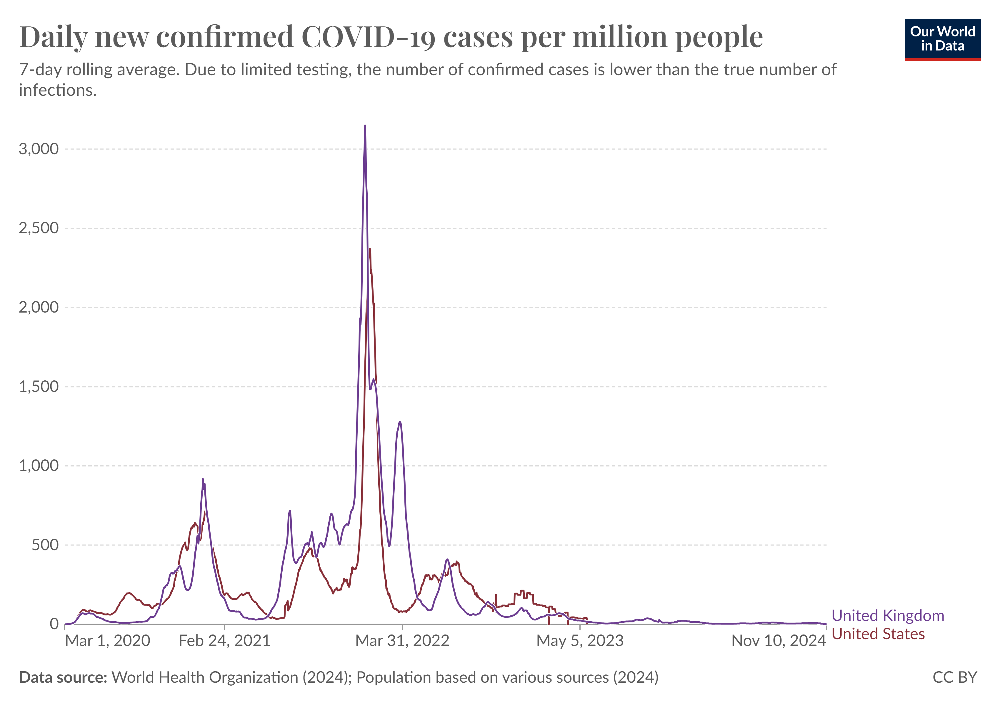

Table of contents |
|---|
| Abstract |
| Introduction |
| Analysis and discussion |
| References |
| Presentation |
Abstract
The COVID-19 pandemic had a catastrophic impact on globalisation, with millions of people being infected. Over 140 million on infection rates and over 3 million deaths reported globally. The pharmaceutical industry were in demand to find a cure for such a challenging cure, due to volant adaptation to different situations and conditions. The pandemic also challenged the food system and disrupting trades and agricultural farmers were spending large amounts of capital on sanitation. Countries such as Uk, America and other European countries were in massive trades with China, which allowed the virus to spread and develop. During the pandemic, the US Federal government increased the fund rates to ease inflation and lower bank loans for business and citizens. The virus increased in volatility during 2021-2022, regardless of the introduction of masks and lockdowns. The virus was so vicious that most developed countries did not expect to such an outcome.
Introduction
The COVID pandemic had a massive impact on humanity since recent times ( Bovlin(GB) , Piret(JP) 15 January 2021). This is only truer as our economy has become more globalised, with increased migration of people and
transport of goods,
the rise of the virus was catastrophic as ‘More than 140 million infections and over 3 million deaths have since been reported globally’ (Exploratory Research in Clinical and Social Pharmacy(2021)).
The virus first took place in Wuhan (China) on 31 December 2019,
Since the outbreak in 2019, the pharmaceutical industry has been researching potential drugs to combat COVID-19, the sudden demand in medicine had the community thinking about the cost and procedure to create
such a drug (Exploratory Research in Clinical and Social Pharmacy(2021)).
The pharmaceutical industry had serious impact as the virus multiplied and infected many citizens, developing into a deadly and contagious virus (Exploratory Research in Clinical and Social Pharmacy(2021)).
It had an abundant effect on elderly and
asthmatic people, which required extra precautions on creating the drug (Exploratory Research in Clinical and Social Pharmacy(2021)).
The virus was difficult to cure because it had many variants and was developing and adjusting to the environment rapidly.
The virus would infect the host and multiply until the host would be completely ill. As diseases spread by cough and other symptoms, the virus becomes stronger as it gets to adapt to different environments
in a short period of time. This was a problem because researchers and scientists had to use different methods to find a cure.
How has COVID-19 had an impact on the world?
The COVID-19 pandemic had devastating problems on human life worldwide (World Health Organisation(2020) Impact of COVID-19 on people's livelihoods, their health and our food systems).
It challenged people to public health and safety by keeping a two-meter distance between people (World Health Organisation(2020) Impact of COVID-19 on people's livelihoods, their health and our food systems).
Millions of people lost their jobs,
food prices going up, inflation increasing in many countries had major impact on economy and trades (World Health Organisation(2020) Impact of COVID-19 on people's livelihoods, their health and our food systems).
‘Border closures, trade restrictions and confinement measures have been preventing farmers from accessing markets,
including for buying inputs and selling their produce, and agricultural workers from harvesting crops, thus disrupting domestic and international food supply chains and reducing access to healthy,
safe and diverse diets’ (World Health Organisation(2020) Impact of COVID-19 on people's livelihoods, their health and our food systems).
Agricultural farmers suffered the most as they were the providing food for their country and since their wages were cut due to extra cost in sanitation and improving the transportation for
food throughout the country so that it doesn’t spread the virus. This made most foods undesirable to trade as COVID was an airborne virus which can infect any host. Therefore, animals and crops were to keep at perfect
conditions to contain the virus (Evelyn S. Rawski. John Wilson Lewis.(2024) Trade of China). Farmers had to go through regulations to meet certain check lists to sell their assets.
Countries like America, United Kingdom, France and most European countries were in macroscale trades with China (Evelyn S. Rawski. John Wilson Lewis.(2024) Trade of China).
Trading goods such as semiconductors, computers and other apparatus (Evelyn S. Rawski. John Wilson Lewis.(2024) Trade of China).
Most countries that were doing trades with China, were economically the richest (Evelyn S. Rawski. John Wilson Lewis.(2024) Trade of China).
This conveys that due to mass trading the virus had an opportunity to develop and grow into a larger scale.
The significance of this demonstrates with the increased number of cases rising in each country during the COVID pandemic.
In the recent study, developed countries would seem to have a lower rate of cases, this may seem to be an assumed statement. On the other hand, most developed countries had the most cases as they were overconfident that
‘developed countries had in their health systems had deleterious effects because they were ill-prepared for the coming wave. They thought that the high level of health services would be sufficient to
absorb the pandemic waves, but this was not the case’(Jeanne, L., Bourdin, S., Nadou, F., & Noiret, G. (2023)).
America has the Federal government which see how the economy either increases or decreases in certain situations. During the pandemic the Federal fund rates increased to 0.25% to decrease the inflation rate
so that citizens and business can still spend their money on products. Lowering bank loans from 2.25% to 0.25% to help people pay their loans and allow banks to borrow money. (Milstein, EM. Wessel, David, DW.(2024))
Analysis and discussion
Figure 1 Mathieu(EM), Ritchie(HR), Rodes-Guirao(LRG), Appel(CA), Gavrilov(DG), Giattino(CG), Hasell(JH), Macdonald(BM), Dattani(SD), Beltekian(DB), Ortiz-Ospina(EOO), Roser(MR), 2024, Title: Explore the global data on confirmed COVID-19 cases URL: https://ourworldindata.org/covid-cases The graph of infection per million  Refer to figure 1. This graph shows the infection rate per person within a million people. As the graph shows that during the early stages of the virus, there was not much infection rate. However, the virus was still showing some signs of being very volatile during January 2021. During 2021- 2022, there was a high volatility of cases rising, this was due to the virus adapting to the nature of colder environments, there were lockdowns before 2021 to contain the virus, so it doesn’t spread to many people. This method worked but not for long as the lockdown restrictions were eased, people were going out more and started working. The virus had another opportunity to mutate and become more deadly. This demonstrates that developed countries for example the: United Kingdom and America did not expect to see such a rise in citizens getting infected. Even during the pandemic masks were given out by the NHS, to keep people save which greatly reduced the virus from spreading to others, on the NHS guide line it was said to keep at least two weeks at home.
References
(1) - Bovlin(GB) , Piret(JP) 15 January 2021, Pandemics Throughtout History, Front. Microbiol, Volume 11 - 2020, Available at: https://doi.org/10.3389/fmicb.2020.631736
Pandemics Throughout History
(2) - Exploratory Research in Clinical and Social Pharmacy(2021). URL:https://pmc.ncbi.nlm.nih.gov/articles/PMC8559533/pdf/main.pdf
Impact of COVID-19 pandemic on pharmaceutical systems and supply chain - a phenomenological study
(3) - World Health Organisation(2020) Impact of COVID-19 on people's livelihoods, their health and our food systems.
URL: https://www.who.int/news/item/13-10-2020-impact-of-covid-19-on-people's-livelihoods-their-health-and-our-food-systems
Effect on food systems and people
(4) - Jeanne, L., Bourdin, S., Nadou, F., & Noiret, G. (2023). Economic globalization and the COVID-19 pandemic: Global spread and inequalities. GeoJournal, 88(1), 1181-1188.
doi:https://doi.org/10.1007/s10708-022-10607-6
Economic globalization and the COVID-19 pandemic: global spread and inequalities
(5) - Evelyn S. Rawski. John Wilson Lewis.(2024) Trade of China. URl: https://www.britannica.com/place/China/Trade
Trades in China
(6) - Milstein, EM. Wessel, David, DW.(2024) What did the Fed do in response to the COVID-19 crisis?
URL: https://www.brookings.edu/articles/fed-response-to-covid19/
Fed response
The PowerPoint Presentation
Loading last update time...